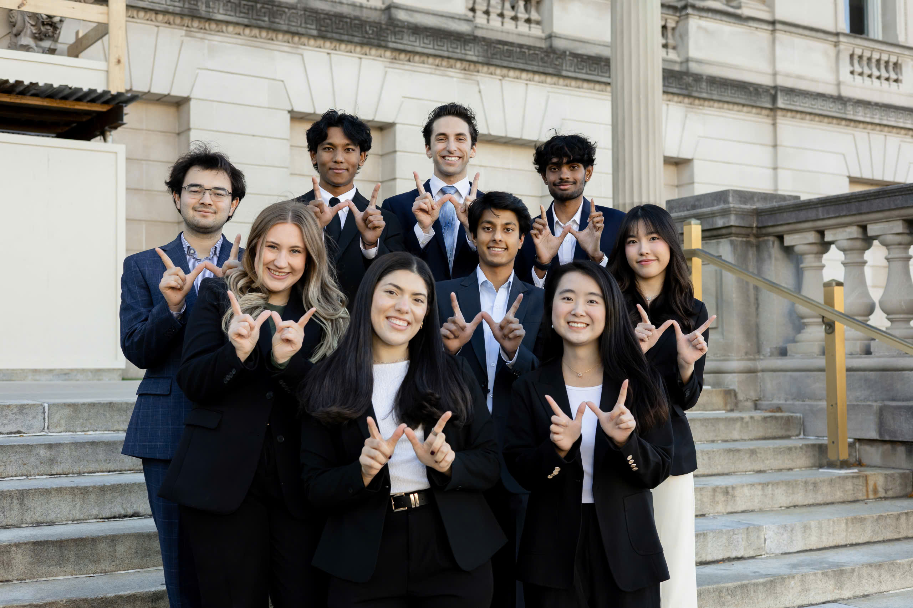

Helen (Huong) Le
Turning Ambition into Strategy
Builder, leader, and future consultant driven by tough problems and real impact.
Get StartedEntrepreneurial Leadership
I build from the ground up, from launching initiatives to leading consulting projects.
People-First Mindset
I push for excellence while investing deeply in the growth of the people around me.
Strategic Confidence
I approach complex problems with structure, clarity, and the confidence to take initiative.
My Consulting Experience
Through pro-bono consulting projects and leadership roles at the Wisconsin Consulting Club, I have worked on strategic challenges involving operations, growth, and market analysis. My past clients include Pfizer, Breakthrough Fuel, and Destination Madison.

Finance & Information Science Junior
University of Wisconsin-Madison
Actively applying classroom learning to consulting projects and leadership roles.
Incoming 2026 Summer Associate
Boston Consulting Group
Preparing to work on complex, high-impact strategy problems across industries.